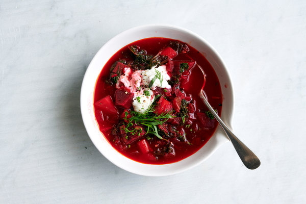

Borscht from Eastern Europe

Description
Borscht is deep red coloured soup with cabbage, beets, potatoes, carrots, onion and garlic, and possibly beef and beans.
It is usually served with sour cream and dill.
Borscht is a true classic soup every Ukrainian or Russian grew up eating almost weekly.
It can be vegan, vegetarian; with beef, pork or even chicken. It truly depends what’s in your fridge that day.
Ingredients
- 3 teaspoons of extra virgin olive oil or vegetable oil
- 1 large onion, chopped
- 0.6 kg section bone-in beef shank with a lot of meat or 0.5 kg of beef stew meat
- 8 cups of beef broth
- 4 large beets (0.6 kg), peeled and chopped
- 4 carrots (0.4-0.5 kg), peeled and chopped
- 1 large russet potato, peeled and cut into small cubes
- 2 cups of thinly sliced cabbage
- 3 or 4 cups of fresh dill
- 2 cups of thinly sliced cabbage
- 3 tablespoons of red wine vinegar
- 1 cup of sour cream
- Salt and freshly ground black pepper to your taste
Steps
- Heat 2 teaspoons of in a large, thick-bottomed pot on medium high heat.
- Add the shank slice or stew beef.
- Let it brown lightly on one side, then turn over.
- Add the chopped onions to the pot. Let them cook and soften for about 5 minutes.
- Pour 4 cups of the beef broth over the beef and onions in the pot. Bring to a boil and then lower the heat to a simmer.
- Cover and cook until the meat is falling-off-the-bone tender (about 1.5 hours)
- Meanwhile, preheat the oven to 200°C.
- Peel and chop the beets, carrots, and potatoes into small pieces.
- Toss the beets and carrots with a teaspoon or two of olive oil and spread them out in a single layer on a foil lined roasting pan.
- Roast them in the oven for 15 minutes.
- Toss the potatoes with olive oil and make room for them in the roasting pan.
- Roast everything for additional 15 minutes.
- Remove the meat from the pot (once it's cooked).
- Chop the meat into bite sized pieces.
- Skim off any excess fat from the liquid in the pot.
- Return the pot to the stove and add the remaining broth, carrots, beets, and potato.
- Add the chopped meat to the pot, the sliced cabbage, and a half cup of the fresh dill.
- Bring to a simmer, and cook for another 15 minutes or so, until the cabbage is cooked through.
- Add the vinegar and season to taste with salt and freshly ground black pepper.
- Don't forget to add a dollop of sour cream when serving. Enjoy!